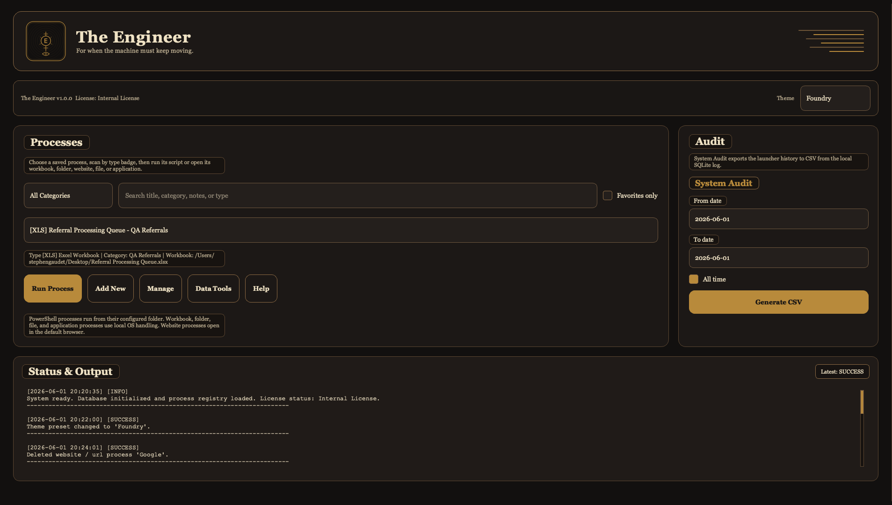
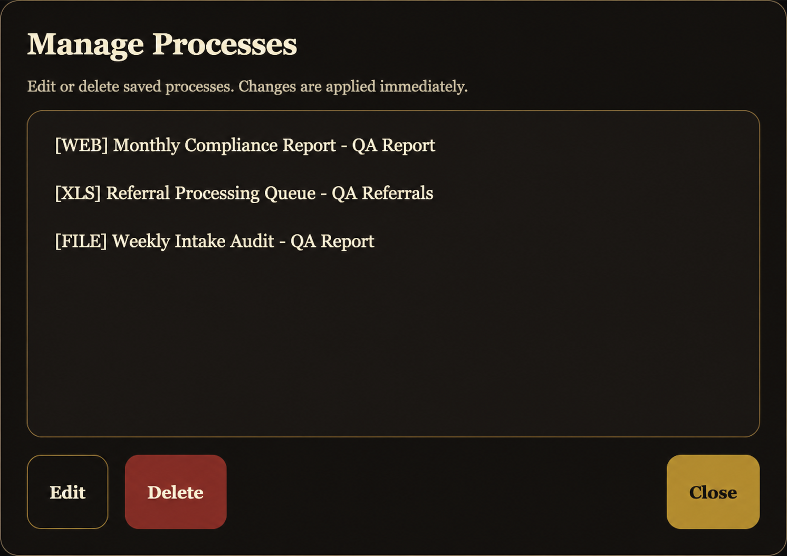

Save launch routines
Keep recurring reports, tools, folders, spreadsheets, websites, and launch routines in one organized desktop app.
Applied Process Computing, LLC
Veteran Owned & Operated
A different kind of
software company.
The Engineer
The Engineer is a simple local Windows desktop app for recurring office workflows, launch shortcuts, folders, files, scripts, websites, and tools.
It is APC’s intro local workflow tool and proof-of-work product: small, practical, and built around the kind of repeatable office routines that slow people down.

What The Engineer does
Keep recurring reports, tools, folders, spreadsheets, websites, and launch routines in one organized desktop app.
Open shortcuts, PowerShell scripts, Excel workbooks, folders, websites / URLs, files, and applications from one controlled console.
Use categories, favorites, notes, and search/filter tools to keep everyday office processes visible and manageable.
Use backup/restore, audit export, registry import/export, the Help dialog, and the desktop shortcut helper where they fit the workflow.
Manage saved workflows
Saved processes can be added, edited, and managed locally for reports, folders, scripts, files, and websites / URLs. Process data stays on the Windows computer running The Engineer.

Who it is for
The Engineer is for offices where recurring work is scattered across scripts, spreadsheets, shared folders, browser bookmarks, reports, and instructions that only one or two people fully understand.
Local-first by design
The Engineer runs locally on Windows as a desktop app. It does not require a cloud account, and it does not use telemetry. Workbook, script, folder, file, and URL data stays on the Windows computer running The Engineer and is not sent to Applied Process Computing, LLC.
Download the Windows release, extract the zip, then run The_Engineer.exe. Purchase the $49 lifetime license for continued use.
Download and run the app
Download the Windows release zip from GitHub.
Right-click the zip and extract the folder before opening the app.
Open the extracted folder and double-click The_Engineer.exe. Purchase the $49 lifetime license for continued use.
Lifetime license
The $49 lifetime license covers The Engineer desktop app. There is no subscription, no cloud account, and no telemetry.
Purchase
The Engineer
$49 lifetime license
Support included with the $49 license covers basic install/setup help, activation questions, usage questions, and maintenance fixes.
Request a Quote
The $49 license covers The Engineer desktop app. Workflow setup/configuration, custom workflow packs, custom changes, larger workflow work, and custom software needs are quoted separately.
Request a QuoteCommon Questions
The Engineer gives recurring office workflows one local Windows launch console for scripts, workbooks, folders, files, websites, reports, and repeatable tools.
Yes. The Engineer runs locally on Windows as a desktop app. It does not require a cloud account, and it does not use telemetry.
It can launch PowerShell scripts, Excel workbooks, folders, files, websites / URLs, and applications.
No. Workbook, script, folder, file, and URL data is not sent to Applied Process Computing, LLC.
The Engineer is $49 for a lifetime license. There is no subscription and no yearly renewal.
The license covers The Engineer desktop app plus basic install/setup help, activation questions, usage questions, and maintenance fixes.
No. Workflow setup/configuration, custom workflow packs, custom changes, and larger workflow or custom software needs are quoted separately.